수질환경기사 (2011-06-12 기출문제)
1과목: 수질오염개론
1. 분뇨의 특징에 관한 설명으로 가장 거리가 먼 것은?
- 분뇨 내 질소화합물은 알칼리도를 높게 유지시켜 pH의 강하를 막아준다.
- 분과 뇨의 구성비는 약 1:8~1:10 정도이며 고액분리가 용이하다.
- 분의 경우 질소산화물은 전체 VS의 12~20% 정도 함유되어 있다.
- 분뇨는 다량의 유기물을 함유하며, 점성이 있는 반고상 물질이다.
(정답률: 88%)

2. 수은(Hg)에 관한 설명으로 옳지 않은 것은?
- 아연정련업, 도금공장, 도자기제조업에서 주로 발생한다.
- 대표적 만성질환으로는 미나마타병, 헌터-루셀 증후군 등이 있다.
- 유기수은은 금속상태의 수은보다 생물체내에 흡수력이 강하다.
- 상온에서 액체상태로 존재하며, 인체에 노출 시 중추신경계에 피해를 준다.
(정답률: 91%)
3. 알칼리도에 관한 설명으로 옳은 것은?
- 자연수중의 알칼리도는 질산염 형태이다.
- 알칼리도가 높은 물을 폭시시키면 pH가 상승하는 경향을 나타낸다.
- 물의 알칼리도는 산을 알칼리화 시킬 수 있는 능력의 척도로서 주로 SO4-2 가 가장 크게 기여한다.
- 중탄산염은 냉수에서는 OH-를 발생하므로 pH가 높아진다.
(정답률: 65%)
4. 물의 특성에 관한 설명으로 옳지 않은 것은?
- 물은 2개의 수소원자가 산소원자를 사이에 두고 104.5° 의 결합각을 가진 구조로 되어 있다.
- 물은 열에 매우 안정한 화합물로 1200℃에서 약 20%~30% 정도 분해되어 수소와 산소로 된다.
- 물은 유사한 분자량의 다른 화합물보다 비열이 매우 커 수온의 급격한 변화를 방지해 준다.
- 물의 밀도는 4℃에서 가장 크다.
(정답률: 91%)
5. 다음 중 호소의 수리특성을 고려하여 부영양화도와 인부하량과의 관계를 경험적으로 예측 평가하는 모델로 가장 적합한 것은?
- HASSP Model
- SNSIM Model
- UASP Model
- Vollenweider Model
(정답률: 93%)
6. 150kL/day의 분뇨를 산기관을 이용하여 포기하였는데 분뇨에 함유된 BOD의 20%가 제거되었다. BOD 1kg을 제거하는데 필요한 공기공급량이 40m3이라 했을 때 하루당 공기공급량은? (단, 연속포기, 분뇨의 BOD는 20000mg/L 이다.)
- 2400m3
- 12000m3
- 24000m3
- 36000m3
(정답률: 83%)
7. PbSO4의 용해도는 물 1L당 0.0345g 이 녹는다면 PbSO4의 용해도적(Ksp)은? (단, Pb 원자량 207)
- 약 1.3×10-8
- 약 1.3×10-9
- 약 1.6×10-8
- 약 1.6×10-9
(정답률: 65%)
8. 내부기관이 발달되어 있지 않고 Bacteria에 가까우며 광합성을 하는 미생물로 엽록소가 엽록체 내부에 있지 않고 세포전체에 퍼져있는 것은? (단, 섬유상이나 군락상의 단세포로 편모없음)
- 규조류
- 남조류
- 녹조류
- 진균류
(정답률: 61%)
9. 유기화합물이 무기화합물과 다른 점을 옳게 설명한 것은?
- 유기화합물들은 대체로 이온반응보다는 분자반응을 하므로 반응속도가 느리다.
- 유기화합물들은 대체로 분자반응보다는 이온반응을 하므로 반응속도가 느리다.
- 유기화합물들은 대체로 이온반응보다는 분자반응을 하므로 반응속도가 빠르다.
- 유기화합물들은 대체로 분자반응보다는 이온반응을 하므로 반응속도가 빠르다.
(정답률: 79%)
10. 수원의 종류 중 지하수에 관한 설명으로 옳지 않은 것은?
- 분해성 유기물질이 풍부한 토양을 통과하게 되면 지하수내에 대량의 이산화탄소가 용해된다.
- 세균에 의한 유기물의 분해가 주된 생물작용이다.
- 유속이 빠르고, 광역적인 환경조건의 영향을 받아 정화되는데 오랜 기간이 소요된다.
- 토양은 대량의 오염을 방지해주며 불순물과 세균이 없는 지하수를 만드는 역할을 한다.
(정답률: 88%)
11. 호소의 영양상태를 평가하기 위한 Carlson 지수 산정시 적용되는 인자와 가장 거리가 먼 것은?
- 투명도
- 총인
- 총질소
- 클로로필-a
(정답률: 71%)
12. 해수의 특성으로 옳지 않은 것은?
- 해수의 밀도는 수온, 염분, 수압에 영향을 받는다.
- 해수는 강전해질로서 1L당 35g의 염분을 함유한다.
- 해수내 전체질소 중 35%정도는 암모니아성 질소, 유기질소 형태이다.
- 염분은 적도해역에서 낮고, 남·북극해역에서 높다.
(정답률: 80%)
13. 경도(Hardness)에 돤한 설명으로 옳지 않은 것은?
- 일반적으로 칼슘이온과 마그네슘이온이 경도의 주원인이 된다.
- 경도는 물의 세기정도를 말하며 2가 이상 양이온 금속의 함량을 탄산칼슘(CaCO3)으로 환산한 값이다.
- 표토층이 얇거나 석회암층이 적게 존재하는 곳에서 경도가 높은 물이 생성된다.
- 탄산경도 성분은 물을 끓일 때 제거되므로 일시경도라 한다.
(정답률: 68%)
14. 생체내에 필수적인 금속으로 결핍시에는 인슐린의 거하로 인한 것과 같은 탄수화물의 대사장해를 일으키는 유해물질로 가장 적합한 것은?
- Cd
- Mn
- CN
- Cr
(정답률: 83%)
15. 새로운 유기성 물오염물질의 지표로 사용되고 있는 총유기탄소(TOC)에 관한 설명으로 옳지 않은 것은?
- BOD 및 COD 분석시험보다 소요되는 시간을 단축할 수 있다.
- 난분해성 물질에 대한 대응성이 낮다.
- 생물분해가 가능한 유기물의 정량화가 어렵다.
- 실제 값보다 약간 낮게 측정되는 경향이 있다.
(정답률: 63%)
16. 이상적인 마개흐름(plug flow) 상태에서 혼합 정도에 대한 설명으로 옳은 것은?
- 분산(variance) = 1
- 분산수(dispersion number) = 0
- 지체시간(lag time) = 0
- 모릴지수(Morrill index) = 0
(정답률: 70%)
17. 다음 중 해수의 pH 범위로 가장 적합한 것은?
- 6.5~7.0
- 7.0~7.2
- 8.0~8.3
- 8.8~9.0
(정답률: 84%)
18. 농도가 A인 기질을 제거하기 위한 반응조를 설계하려고 한다. 요구되는 기질의 전환율이 90%일 경우에 회분식 반응조에서의 체류시간(hr)은? (단, 반응은 1차반응(자연대수기준)이며, 반응상수 K는 0.45/hr임)
- 5.12
- 6.58
- 13.16
- 19.74
(정답률: 50%)
19. 글리신(CH2(NH2)COOH)의 이론적 COD/TOC의 비는? (단, 글리신의 최종분해산물은 CO2, HNO3, H2O이다. )
- 1.67
- 2.67
- 4.67
- 5.67
(정답률: 61%)
20. pH 7인 물에서 CO2의 해리상수는 4.3×10-7이고 [HCO3-] =4.3×10-2 mole/L 일 때 CO2의 농도는?
- 1mg/L
- 10mg/L
- 44mg/L
- 440mg/L
(정답률: 73%)
2과목: 상하수도계획
21. 상수처리를 위한 중간염소 처리시 염소제의 주입지점으로 가장 적합한 곳은?
- 도수관로와 착수정 사이
- 응집조와 침전지 사이
- 착수정과 혼화지 사이
- 침전지와 여과지 사이
(정답률: 66%)
22. 상수의 배수시설인 배수지에 관한 설명으로 옳지 않은 것은?
- 가능한 한 급수지역의 중앙 가까이 설치한다.
- 유효수심은 2~4m 정도를 표준으로 한다.
- 유효용량은 “시간변동조정용량”과 “비상대처용량”을 합하여 급수구역의 계획1일최대급수량의 12시간분 이상을 표준으로 한다.
- 자연유하식 배수지의 표고는 최소동수압이 확보되는 높이여야 한다.
(정답률: 65%)
23. 부상식 농축조의 용량과 형식에 관한 설명으로 옳지 않은 것은?
- 형상은 원형이나 사각형으로 한다.
- 농축조의 수는 원칙적으로 2조 이상으로 한다.
- 고형물 부하는 200~250kg·ds/m2·d를 표준으로 한다.
- 깊이는 4.0~5.0m를 표준으로 한다.
(정답률: 56%)
24. 다음은 상수시설인 도수관을 설계할 때의 평균유속에 관한 설명이다. ( )안에 알맞은 것은?
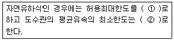
- ① 3.0m/s, ② 0.3m/s
- ① 3.0m/s, ② 1m/s
- ① 5.0m/s, ② 0.3m/s
- ① 5.0m/s, ② 1m/s
(정답률: 70%)
25. 하수도에 사용되는 펌프형식 중 전양정이 3~12m 일 때 적용하고, 펌프구경은 400mm 이상을 표준으로 하며 양정변화에 대하여 수량의 변동이 적고, 또 수량변동에 대해 동력의 변화도 적으므로 우수용 펌프 등 수위변동이 큰 곳에 적합한 것은?
- 원심펌프
- 사류펌프
- 원심사류펌프
- 축류펌프
(정답률: 63%)
26. 상수도 시설인 배수관 관경 결정의 기초가 되는 수량은?
- 계획 시간 최대 배수량
- 계획 시간 평균 배수량
- 계획 1일 최대 배수량
- 계획 1일 평균 배수량
(정답률: 59%)
27. 하수도시설의 목적과 가장 거리가 먼 것은?
- 지속발전 가능한 물순환 구조구축
- 침수방지
- 공공수역의 수질보전
- 하수의 배제와 이에 따른 생활환경의 개선
(정답률: 50%)
28. 다음 정수처리방법과 정수시설의 선정에 관한 설명으로 옳지 않은 것은?
- 정수처리공정이 소독만 있는 방식은 원수수질이 양호하고 대장균군 50MPN(100mL)이하이고 일반세균 500CFU(1mL)이하이며 그 외 수질 항목이 먹는물 수질기준 등에 상시 적합한 경우에 간이방식으로 처리할 수 있다.
- 완속여과방식은 원수수질이 비교적 양호하고 대장균군 1000MPN(100mL)이하, BOD 2mg/L 이하, 최고 탁도 10NTU 이하인 경우에 처리할 수 있다.
- 급속여과방식은 용해성물질의 제거능력이 거의 없으므로 문제가 되는 용해성물질의 종류와 농도에 따라서는 고도정수시설을 추가할 필요가 있다.
- 막여과방식은 크립토스포리디움에 오염될 우려가 있는 경우에는 채책할 수가 없으며, 수개월 간격으로 막을 교환해야 하는 등 운전관리상 어려움이 있다.
(정답률: 40%)
29. 정수처리를 위한 침전지 중 고속응집침전지를 선택할 때 고려하여야 하는 조건으로 옳지 않은 것은?
- 원수 탁도는 10 NTU 이상이어야 한다.
- 최고 탁도는 10000 NTU 이하인 것이 바람직하다.
- 처리수량의 변동이 적어야 한다.
- 탁도와 수온의 변동이 적어야 한다.
(정답률: 60%)
30. 콘크리트조의 장방형 수로(폭 2m, 깊이 2.5m)가 있다. 이 수로의 유효수심이 2m인 경우의 평균유속은? (단, Manning 공식으로 계산, 동수경사 : 1/2000, 조도계수:0.017이다.)
- 1.00m/sec
- 1.42m/sec
- 1.53m/sec
- 1.73m/sec
(정답률: 50%)
31. 표준활성슬러지법 HRT(수리학적 체류시간)의 표준은?
- 1~2시간
- 2~4시간
- 4~6시간
- 6~8시간
(정답률: 57%)
32. 유역면적이 1.2km2, 유출계수가 0.2인 산림지역에 강우가 2.5mm/min 율로 내렸다면 우수유출량은? (단, 합리식 적용)
- 4m3/sec
- 6m3/sec
- 8m3/sec
- 10m3/sec
(정답률: 62%)
33. 상수도 시설 중 침사지에 관한 설명으로 옳지 않은 것은?
- 지의 길이는 폭의 3~8배를 표준으로 한다.
- 지의 상단높이는 고수위보다 0.6~1m의 여유고를 둔다.
- 지의 유효수심은 5~7m를 표준으로 한다.
- 표면부하율은 200~500mm/min을 표준으로 한다.
(정답률: 49%)
34. I=3660/(t+15)mm/hr, 면적 2.0km2, 유입시간 6분, 유출계수C=0.65, 관내유속이 1m/sec 인 경우 관길이 600m 인 하수관에서 흘러나오는 우수량은? (단, 합리식 적용)
- 31m3/sec
- 38m3/sec
- 43m3/sec
- 52m3/sec
(정답률: 64%)
35. 다음은 하수관거의 접합방법을 정할 때의 고려사항이다. ( )안에 가장 적합한 것은?
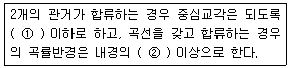
- ① 80° , ② 5배
- ① 80° , ② 3배
- ① 60° , ② 5배
- ① 60° , ② 3배
(정답률: 79%)
36. 다음은 지하수 취수시설(복류수포함)인 집수매거에 관한 설명이다. ( )안에 알맞은 것은?
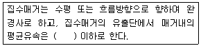
- 0.3m/s
- 0.5m/s
- 1.0m/s
- 3.0m/s
(정답률: 56%)
37. 구경 400mm인 모터의 직렬펌프에서 양수량 10m3/min, 규정 전양정 40m, 규정 회전수 2800rpm 일 때 비속도(Ns)는? (단, 일반적인 단위 적용)
- 209
- 356
- 417
- 557
(정답률: 46%)
38. 캐비테이션이 발생하는 것을 방지하기 위한 대책으로 옳지 않은 것은?
- 펌프의 설치위치를 가능한 한 낮추어 가용유효흡입수두를 크게 한다.
- 펌프의 회전속도를 낮게 하여 펌프의 필요유효흡입수두를 작게 한다.
- 흡입측 밸브롤 조금만 개방하고 펌프를 운전한다.
- 흡입관의 손실을 가능한 한 작게 하여 가용유효흡입수두를 크게 한다.
(정답률: 54%)
39. 상수도 시설 중 원수를 취수지점으로부터 정수장까지 끌어들이는 시설은?
- 배수시설
- 급수시설
- 송수시설
- 도수시설
(정답률: 70%)
40. 하수관거시설인 오수받이에 관한 다음 설명 중 거리가 먼 것은?
- 오수받이를 부득이 사유지에 설치시는 소유자와 협의하여 정한다.
- 오수받이의 저부에는 인버트를 반드시 설치한다.
- 오수받이의 뚜껑은 견고하고 내구성 있는 재료로 만들어진 밀폐 뚜껑으로 한다.
- 오수받이의 규격은 내경 150~300mm, 깊이 500~1,000mm 정도로 한다.
(정답률: 61%)
3과목: 수질오염방지기술
41. Langmuir 등온 흡착식을 유도하기 위한 가정으로 옳지 않은 것은?
- 한정된 표면만이 흡착에 이용된다.
- 표면에 흡착된 용질물질은 그 두께가 분자 한 개 정도의 두께이다.
- 흡착은 비가역적이다.
- 평형조건이 이루어졌다.
(정답률: 70%)
42. 처리되지 않은 폐수에서 발생하는 냄새의 화학식 및 특징을 연결한 것으로 옳지 않은 것은?
- Skatole - C9H9N - 배설물냄새
- Mercaptans - CH3(CH2)3 - 부패된 생선냄새
- Amines - CH3NH2 - 생선냄새
- Diamines - NH2(CH2)5NH2 - 부패된 고기 냄새
(정답률: 58%)
43. SS가 55mg/L이고 유량이 4500m3/day인 흐름에 황산제이철을 응집제로 50mg/L를 주입한다 이 물에 알칼리도가 없을 경우 매일 첨가해야 할 Ca(OH)2의 양은? (단, Fe=55.8, Ca=40) [Fe2(SO4)3 + 3Ca(OH)2 → 2Fe(OH)3(S) + 3CaSO4]
- 75kg/day
- 95kg/day
- 125kg/day
- 175kg/day
(정답률: 61%)
44. 역삼투법으로 하루에 760m3의 3차 처리유출수를 탈염하기 위하여 요구되는 막의 면적(m2)은? (조건 : 1. 물질전달계수= 0.104L/(d-m2)(kPa) 2. 유입, 유출수의 압력차= 2400kPa 3. 유입, 유출수의 삼투압차= 310kPa 4. 운전온도 고려하지 않음)
- 약 3200
- 약 3400
- 약 3500
- 약 3600
(정답률: 58%)
45. Chick's Law에 의하면 염소소독에 의한 미생물 사멸율은 1차 반응에 따른다고 한다. 미생물의 80%가 0.1mg/L 잔류염소로 2분 내에 사멸된다면 99.9%를 사멸시키기 위해서 요구되는 접촉시간은?
- 5.7분
- 8.6분
- 12.7분
- 18.2분
(정답률: 49%)
46. 생물학적으로 질소를 제거하기 위해 질산화-탈질공정을 운영함에 있어, 호기성 상태에서 산화된 NO3- 60mg/L를 탈질시키는데 소모되는 메탄올의 양은?
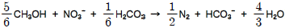
- 약 14mg/L
- 약 18mg/L
- 약 22mg/L
- 약 26mg/L
(정답률: 43%)
47. 폐수처리장의 완속교반기 동력을 부피 1000m3인 탱크에서 G값을 50/s를 적용하여 설계하고자 한다면 이론적으로 소요되는 동력은? (단, 폐수의 점도는 1.139×10-3N·s/m2)
- 약 2.8 kW
- 약 3.6 kW
- 약 4.4 kW
- 약 5.6 kW
(정답률: 43%)
48. 기계식 봉 스크린을 0.64m/s 로 흐르는 수로에 설치하고자 한다. 봉의 두께는 10mm 이고, 간격이 30mm라면 봉 사이로 지나는 유속(m/s)은?
- 0.75
- 0.80
- 0.85
- 0.90
(정답률: 46%)
49. 사각침전조를 설계하려 한다. 유량은 30300m3/day이고, 표면 부하율은 24.4m3/m2·day이며 체류시간은 6시간이라면 조의 깊이는? (단, 길이와 폭의 비는 2:1)
- 4.1 m
- 5.1 m
- 6.1 m
- 7.1 m
(정답률: 52%)
50. 폐수량 500m3/일, BOD 300mg/L인 폐수를 표준 활성 슬러지공법으로 처리하여 최종방류수 BOD 농도를 20mg/L이하로 유지하고자 한다. 최초침전지 BOD 제거효율이 30%일 때 포기조와 최종침전지, 즉 2차 처리 공정에서 유지되어야 하는 최저 BOD 제거효율은?
- 81%
- 86%
- 91%
- 96%
(정답률: 33%)
51. 함수율이 90%인 슬러지 겉보기 비중이 1.02 이었다. 이 슬러지를 탈수하여 함수율이 60%인 슬러지를 얻었다면 탈수된 슬러지가 갖는 비중은? (단, 물의 비중은 1.0 으로 한다. )
- 약 1.09
- 약 1.12
- 약 1.15
- 약 1.18
(정답률: 29%)
52. 기계적으로 청소가 되는 바 스크린의 바(bar) 두께는 5mm이고, 바간의 거리는 30mm 이다. 바를 통과하는 유속이 0.90m/s 일 때 스크린을 통과하는 수두손실(m)은? (단,
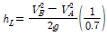
)- 0.0157m
- 0.0238m
- 0.0325m
- 0.0452m
(정답률: 30%)
53. 다음의 막공법 중 '농도차'가 분리를 위한 추진 구동력인 것은?
- 역삼투법
- 한외여과법
- 전기투석법
- 투석법
(정답률: 53%)
54. 활성슬러지 공정을 사용하여 BOD 200mg/L의 하수 2000m3/d를 BOD 30mg/L까지 처리하고자 한다. 폭기조의 MLSS를 1600mg/L로 유지하고, 체류시간을 8시간으로 하고자 할 때의 F/M 비는?
- 0.12 kg BOD/kg MLSS·day
- 0.24 kg BOD/kg MLSS·day
- 0.37 kg BOD/kg MLSS·day
- 0.43 kg BOD/kg MLSS·day
(정답률: 46%)
55. 유량이 3000m3/일이고, BOD 농도가 400mg/L인 폐수를 활성슬러지법으로 처리하고 있다. 포기시간을 8시간으로 처리한 결과 처리수의 BOD 및 SS농도가 각각 30mg/L이었고 MLSS농도는 4000mg/L이었으며, 폐슬러지 생산량은 50m3/일 이었다면 폐슬러지 농도가 0.9%이며, 세포증식계수가 0.8인 경우 내 호흡율(Kd)은?
- 약 0.032/일
- 약 0.046/일
- 약 0.063/일
- 약 0.087/일
(정답률: 26%)
56. 유량이 5000m3/day 이며 BOD가 200mg/L인 폐수를 폭기조 MLSS 3000mg/L, 1일 폐기 슬러지 400kg/day, 유출수의 SS농도가 20mg/L, 폭기조 체류시간 6시간으로 운전시킬 때 슬러지 일령(SRT)은? (단, 반송슬러지 SS농도는 4%라 가정함)
- 5.5일
- 6.5일
- 7.5일
- 8.5일
(정답률: 24%)
57. 유량 10000m3/d인 폐수를 처리하기 위한 공정인 정방형 skimming 탱크의 표면적 부하율은? (단, 체류시간은 10분이고, 상승속도는 200mm/min 임)
- 213m3/m2·d
- 233m3/m2·d
- 258m3/m2·d
- 288m3/m2·d
(정답률: 35%)
58. 하수고도처리를 위한 A/O공정이 일반적인 활성 슬러지공법과 비교하여 가지는 특징으로 옳은 것은?
- 혐기조에서 인의 과잉흡수가 일어난다.
- 폭기조 내에서 탈질이 잘 이루어진다.
- 잉여슬러지 내의 인 농도가 높다.
- 최종 침전지 상등수를 응집 처리한다.
(정답률: 55%)
59. 연속 회분식 활성슬러지법인 SBR(Sequencing Batch Reactor)에 대한 설명으로 “최대의 수량을 포기조 내에 유지한 상태에서 운전 목적에 따라 포기와 교반을 하는 단계”는 어떤 운전 공정인가?
- 유입기
- 반응기
- 침전기
- 유출기
(정답률: 55%)
60. 농도 4000mg/L인 폭기조내 활성슬러지 1리터를 30분간 정치시켰을 때, 침강슬러지 부피가 40%를 차지하였다. 이 때 SDI는?
- 1
- 2
- 10
- 100
(정답률: 38%)
4과목: 수질오염공정시험기준
61. 생물화학적 산소요구량(BOD) 측정방법으로 옳지 않은 것은?
- 시료 중의 용존산소가 소비되는 산소의 양보다 적을 때에는 시료를 희석수로 적당히 희석하여 사용한다.
- 시료의 pH가 5.5~8.5 범위를 벗어나는 시료는 염산(1+5) 또는 10%수산화나트륨으로 중화하여 pH7로 하되, 이때 넣어주는 산 또는 알칼리의 양은 시료량의 5%가 넘지 않도록 한다.
- 예상 BOD 치에 대한 사전경험이 없는 오염된 하천수의 경우에는 25~100% 정도의 시료가 함유되도록 희석 조제한다.
- 일반적으로 잔류염소가 함유된 시료는 BOD용 식종희석수로 희석하여 사용한다.
(정답률: 34%)
62. 수질오염공정시험기준의 총칙에 관한 설명으로 가장 거리가 먼 것은?
- 시험에 사용하는 시약은 따로 규정이 없는 한 1급 이상 또는 이와 동등한 규격의 시약을 사용한다.
- “항량으로 될 때까지 건조한다” 라는 의미는 같은 조건에서 1시간 더 건조할 때 전후 무게의 차가 g당 0.3mg 이하일 때를 말한다.
- 기체의 농도는 표준상태로 환산 표시한다.
- “정확히 취하여”라 하는 것은 구정한 양의 시료를 부피피펫으로 0.1mL 눈금단위까지 다는 것을 말한다.
(정답률: 48%)
63. 분원성 대장균군-막여과법에서 배양온도 유지기준으로 옳은 것은?
- 25±0.2℃
- 30±0.5℃
- 35±0.5℃
- 44.5±0.2℃
(정답률: 59%)
64. 원자흡수분광광도법(원자흡광광도법)으로 분석 시 일어나는 간섭의 종류에 해당하지 않는 것은?
- 물리적 간섭
- (분)광학적 간섭
- 화학적 간섭
- 전리적 간섭
(정답률: 40%)
65. 암모니아성 질소를 자외선/가시선 분광법(흡광광도법)으로 측정하고자 할 때의 측정파장(①)과 이온전극법으로 측정하고자 할 때 암모늄 이온을 암모니아로 변화 시킬때의 시료의 pH 범위(②)로 옳은 것은?
- ① 630nm, ② 4~6
- ① 540nm, ② 4~6
- ① 630nm, ② 11~13
- ① 540nm, ② 11~13
(정답률: 35%)
66. 유기물 함량이 비교적 높지 않고 금속의 수산화물, 산화물, 인산염 및 황화물을 함유하는 시료에 적용되는 전처리방법(산분해법)으로 가장 적합한 것은?
- 질산에 의한 분해
- 질산 - 과염소산에 의한 분해
- 질산 - 과염소산 - 불화수소산에 의한 분해
- 질산 - 염산에 의한 분해
(정답률: 38%)
67. 총 노말헥산추출물질 시험방법에서 시료에 넣어주는 지시약과 염산 (1+1)을 넣어 조절해야 하는 pH 범위로 가장 적합한 것은?
- 메틸렌블루용액(0.1W/V%), pH 5.5 이하
- 메틸레드용액(0.1W/V%), pH 5.5 이하
- 메틸오렌지용액(0.1W/V%), pH 4 이하
- 메틸레드용액(0.1W/V%), pH 4 이하
(정답률: 47%)
68. 다음은 총 유기탄소 시험에 적용되는 용어의 정의이다. ( )안에 알맞은 것은?
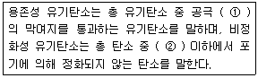
- ① 0.45㎛, ② pH 2
- ① 4.5㎛, ② pH 2
- ① 0.45㎛, ② pH 10
- ① 45㎛, ② pH 10
(정답률: 50%)
69. 이온전극법에 관한 설명으로 옳지 않은 것은?
- 비교전극은 일반적으로 내부전극으로 백금-은 전극이 많이 사용된다.
- 자석교반기는 교반에 의해 열이 발생하여 액온에 의해 변화가 일어나서는 안 되며, 회전속도가 일정하게 유지될 수 있는 것이어야 한다.
- 이온전극의 종류로는 유리막 전극, 고체막 전극, 격막형 전극 등이 있다.
- 저항 전위계 또는 이온측정기는 mV 까지 읽을 수 있는 고압력 저항측정기여야 한다.
(정답률: 25%)
70. 수질시료를 보존할 때 반드시 유리용기에 넣어 보존해야 하는 측정 항목으로 가장 거리가 먼 것은?
- 폴리클로리네이티드비페닐
- 페놀류
- 유기인
- 불소
(정답률: 47%)
71. 다음 중 납을 자외선/가시선 분광법(흡광광도법)으로 측정할 때의 파장으로 가장 적합한 것은?
- 510nm
- 520nm
- 540nm
- 620nm
(정답률: 28%)
72. 다음은 기체크로마토그래피에 의한 알킬수은의 분석방법이다. ( )안에 알맞은 것은?
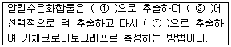
- ① 헥산, ② 염화메틸수은용액
- ① 헥산, ② 크로모졸브용액
- ① 벤젠, ② 펜토에이트용액
- ① 벤젠, ② L-시스테인용액
(정답률: 43%)
73. 알칼리성 과망간산칼륨법에 의한 화학적 산소요구량을 측정할 때 적정 시에 사용되는 용액은?
- 0.025N Na2C2O3
- 0.025N Na2S3O2
- 0.025N Na2S2O3
- 0.025N Na2C3O2
(정답률: 41%)
74. 다음은 니켈의 자외선/가시선 분광법(흡광광도법)에 의한 측정원리이다. ( )안에 알맞은 것은?
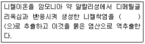
- 클로로포름
- 노말헥산
- 벤젠
- 사염화탄소
(정답률: 26%)
75. A폐수의 부유물질(SS)을 측정하였더니 1312mg/L이었다. 시료 여과전 유리섬유여지의 무게가 1.2113g 이고, 이 때 사용된 시료량이 100mL이었다면 시료 여과 후 건조시킨 유리섬유여지의 무게는 얼마인가?
- 1.2242g
- 1.3425g
- 2.5233g
- 3.5233g
(정답률: 35%)
76. 인산염인의 측정법에 관한 설명으로 옳지 않은 것은?
- 이염화주석환원법(염화제일주석환원법)은 환원하여 생성된 몰리브덴청의 흡광도를 690nm에서 측정하는 방법이다.
- 아스코빈산환원법으로 측정할 경우 880nm에서 측정이 불가능 할 경우에는 710nm에서 측정한다.
- 이염화주석환원법(염화제일주석환원법)인 경우 발색제를 넣은 다음흡광도 측정까지의 소요시간은 30분 정도이다.
- 이염화주석환원법(염화제일주석환원법)에서 시료가 산성일 경우 p-니트로페놀용액(0.1%)을 지시약으로 수산화나트륨용액(4%) 또는 암모니아수(1+10)를 넣어 액이 황색이 나타날 때까지 중화한다.
(정답률: 19%)
77. 다음 항목이 포함된 시료 중 NaOH로 pH12이상으로 하여 보존해야 것은?
- 시안
- 클로로필a
- 페놀류
- 노말헥산추출물질
(정답률: 44%)
78. 다음은 불소의 수증기 증류법에 관한 설명이다. ( )안에 알맞은 것은?
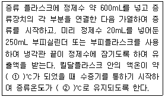
- ① 80, ② 100~110
- ① 100, ② 100~120
- ① 110, ② 110~130
- ① 140, ② 140~150
(정답률: 19%)
79. 기체크로마토그래피에 의해 유기인을 측정하는 방법으로 옳지 않은 것은?
- 수질오염공정시험기준에 의해 시험할 경우 유효측정농도는 0.00⑤mg/L 이상으로 한다.
- 검출기는 불꽃광도 검출기(FPD)를 사용한다.
- 메틸디메톤의 추출률을 높이기 위해서 헥산 대신 에틸렌글리콜과 디클로로메탄의 혼합액을 사용한다.
- 방해물질을 함유하지 않은 시료일 경우 정제조작을 생략할 수 있다.
(정답률: 24%)
80. 이온전극법에서 격막형 전극을 이용하여 측정하는 이온과 거리가 먼 것은?
- F-
- CN-
- NH4+
- NO2-
(정답률: 33%)
5과목: 수질환경관계법규
81. 환경부장관이 수립하는 대권역별 수질 및 수생태계 보전을 위한 기본계획에 포함되어야 하는 사항과 가장 거리가 먼 것은?
- 수질오염관리 기본 및 시행계획
- 점오염원, 비점오염원 및 기타 수질오염에 의한 수질오염물질 발생량
- 점오염원, 비점오염원 및 기타 수질오염원의 분포현황
- 수질 및 수생태계 변화 추이 및 목표기준
(정답률: 24%)
82. 비점오염저감계획서에 포함되어야 하는 사항과 가장 거리가 먼 것은?
- 비점오염원 저감방안
- 비점오염원 관리 및 모니터링 방안
- 비점오염저감시설 설치계획
- 비점오염원 관련 현황
(정답률: 38%)
83. 정당한 사유없이 공공수역에 다량의 토사를 유출하거나 버려 상수원 또는 하천, 호소를 현저히 오염되게 하는 행위를 한 자에 대한 벌칙기준은?
- 7년 이하의 징역 또는 5천만원 이하의 벌금
- 5년 이하의 징역 또는 3천만원 이하의 벌금
- 3년 이하의 징역 또는 1천5백만원 이하의 벌금
- 1년 이하의 징역 또는 1천만원 이하의 벌금
(정답률: 17%)
84. 하천의 수질 및 수생태계 환경기준 중 안티몬에 대한 사람의 건강보호 기준으로 옳은 것은?(단, 단위는 mg/L)
- 0.01 이하
- 0.02 이하
- 0.03 이하
- 0.04 이하
(정답률: 23%)
85. 수질오염경보인 조류경보단계 중 “조류주의보” 발령기준은?
- 2회 연속채취시 클로로필-a 농도 15mg/m3 이상이고 남조류 세포수 500 세포/mL 이상인 경우
- 2회 연속채취시 클로로필-a 농도 25mg/m3 이상이고 남조류 세포수 500 세포/mL 이상인 경우
- 2회 연속채취시 클로로필-a 농도 15mg/m3 이상이고 남조류 세포수 1,000 세포/mL 이상인 경우
- 2회 연속채취시 클로로필-a 농도 25mg/m3 이상이고 남조류 세포수 1,000 세포/mL 이상인 경우
(정답률: 12%)
86. 다음 위반행위에 따른 벌칙기준 중 1년 이하의 징역 또는 1천만원 이하의 벌금에 처하는 경우는?
- 허가를 받지 아니하고 폐수배출시설을 설치한 자
- 폐수무방류배출시설에서 배출되는 폐수를 오수 또는 다른 배출시설에서 배출되는 페수와 혼합하여 처리하는 행위를 한 자
- 환경부장관에게 신고하지 아니하고 기타 수질오염원을 설치한 자
- 배출시설의 설치를 제한하는 지역에서 배출시설을 설치한 자
(정답률: 23%)
87. 오염물질의 배출허용기준 중 “나지역”의 기준으로 옳은 것은?(오류 신고가 접수된 문제입니다. 반드시 정답과 해설을 확인하시기 바랍니다.)
- BOD : 120mg/L 이하(1일 폐수배출량 2000m3 미만)
- BOD : 90mg/L 이하(1일 폐수배출량 2000m3 이상)
- BOD : 90mg/L 이하(1일 폐수배출량 2000m3 미만)
- BOD : 80mg/L 이하(1일 폐수배출량 2000m3 이상)
(정답률: 35%)
88. 수질 및 수생태계 보전에 관한 법률상 용어의 정의로 옳지 않은 것은?
- “비점오염저감시설”이라 함은 수질오염방지시설 중 비점오염원으로부터 배출되는 수질오염물질을 제거하거나 감소하게 하는 시설로서 환경부령이 정하는 것을 말한다.
- “공공수역”이라 함은 하천·호소·항만·연안해역 그 밖에 공공용에 사용되는 수역과 이에 접속하여 공공용에 사용되는 환경부령이 정하는 수로를 말한다.
- “비점오염원”이라 함은 도시, 도로, 농지, 산지, 공사장 등으로서 불 특정 장소에서 불특정하게 수질오염물질을 배출하는 배출원을 말한다.
- “기타 수질오염원”이라 함은 비점오염원으로 관리되지 아니하는 특정 수질오염물질을 배출하는 시설로서 환경부령이 정하는 것을 말한다.
(정답률: 33%)
89. 다음은 초과배출부과금 산정시 적용되는 위반횟수별 부과계수에 관한 내용이다. ( )안에 알맞은 것은?
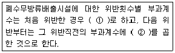
- ① 1.5, ② 1.3
- ① 1.8, ② 1.5
- ① 2.1, ② 1.7
- ① 2.4, ② 1.9
(정답률: 45%)
90. 조류경보 단계 중 “조류주의보” 발령시 관계기관의 조치사항과 가장 거리가 먼 것은?
- 조류증식 수심 이하로 취수구 이동
- 주변 오염원에 대한 철저한 지도, 단속
- 정수처리강화(활성탄처리, 오존처리)
- 주 1회 이상 시료채취 및 분석
(정답률: 19%)
91. 다음 수질오염 방지시설 중 화학적 처리시설로 분류되는 것은?
- 소각시설
- 여과시설
- 증류시설
- 부상시설
(정답률: 34%)
92. 기본배출부과금 산정에 필요한 지역별 부과계수로 옳은 것은?
- 청정지역 및 가 지역 : 1.5
- 청정지역 및 가 지역 : 1.2
- 나 지역 및 특례지역 : 1.5
- 나 지역 및 특례지역 : 1.2
(정답률: 34%)
93. 폐수종말처리시설 배수설비의 설치방법 및 구조기준으로 옳지 않은 것은?
- 배수관의 관경은 내경 150mm 이상으로 하여야 한다.
- 배수관은 우수관과 합류하여 설치하여야 한다.
- 배수관의 기점·종점·합류점·굴곡점과 관경·관종이 달라지는 지점에는 맨홀을 설치하여야 한다.
- 배수관 입구에는 유효간격 10mm 이하의 스크린을 설치하여야 한다.
(정답률: 33%)
94. 폐수를 생물화학적 처리방법으로 처리하는 경우 환경부령이 정하는 시운전 기간기준으로 옳은 것은?
- 가동개시일부터 30일. 다만, 가동개시일이 11월 1일부터 다음연도 1월 31일까지에 해당하는 경우에는 가동개시일부터 50일로 한다.
- 가동개시일부터 50일. 다만, 가동개시일이 11월 1일부터 다음연도 1월 31일까지에 해당하는 경우에는 가동개시일부터 70일로 한다.
- 가동개시일부터 30일. 다만, 가동개시일이 10월 1일부터 다음연도 3월 31일까지에 해당하는 경우에는 가동개시일부터 50일로 한다.
- 가동개시일부터 50일. 다만, 가동개시일이 10월 1일부터 다음연도 3월 31일까지에 해당하는 경우에는 가동개시일부터 70일로 한다.
(정답률: 47%)
95. 다음은 수변생태구역의 매수·조성 등에 관한 내용이다. ( )안에 알맞은 것은?
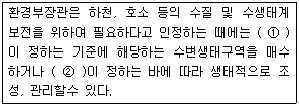
- ① 환경부령 ② 대통령령
- ① 대통령령 ② 환경부령
- ① 자치단체장 ② 대통령령
- ① 자치단체장 ② 환경부령
(정답률: 36%)
96. 폐수종말처리시설의 관리·운영자가 처리시설의 적정운영여부 확인을 위한 방류수 수질검사 실시기준으로 옳은 것은? (단, 시설규모는 1000m3/day이며, 수질은 현저히 악화되지 않았음)
- 방류수 수질검사 월 2회 이상
- 방류수 수질검사 월 1회 이상
- 방류수 수질검사 매분기 1회 이상
- 방류수 수질검사 매반기 1회 이상
(정답률: 30%)
97. 낚시금지구역 또는 낚시제한구역의 안내판의 규격기준 중 색상기준으로 옳은 것은?
- 바탕색: 청색, 글씨: 흰색
- 바탕색: 흰색, 글씨: 청색
- 바탕색: 회색, 글씨: 흰색
- 바탕색: 흰색, 글씨: 회색
(정답률: 36%)
98. 비점오염저감시설을 자연형과 장치형 시설로 구분할 때 다음 중 장치형 시설에 해당하지 않는 것은?
- 침투시설
- 여과형 시설
- 와류형 시설
- 스크린형 시설
(정답률: 29%)
99. 발령기준이 “생물감시 측정값이 생물감시 경보기준 농도를 30분 이상 지속적으로 초과하고, 전기전도도, 휘발성 유기화합물, 페놀, 중금속 (구리, 납, 아연, 카드늄 등)항목 중 1개 이상의 항목이 측정항목별 경보기준을 3배 이상 초과하는 경우”에 해당되는 수질오염 감시경보 단계는?
- 주의 단계
- 경계 단계
- 심각 단계
- 발생 단계
(정답률: 37%)
100. 다음 중 특정수질 유해물질로 분류되어 있지 않은 것은?
- 1,4-다이옥산
- 아세트알데히드
- 아크릴아미드
- 브로모포름
(정답률: 28%)